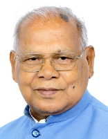
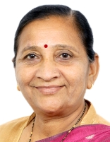

3য় নরেন্দ্র মোদী মন্ত্রক

সময়কাল:
৯ জুন ২০২৪ - ১ জানুয়ারী ২০২৫
উপ-প্রধানমন্ত্রীরা:
রচনা:
মন্ত্রিপরিষদ্ভুক্ত মন্ত্রী: ৩০
প্রতিমন্ত্রী (স্বাধীন দায়িত্ব): ৫
প্রতিমন্ত্রী: ৩৬
প্রধান মন্ত্রিপরিষদ মন্ত্রী
রাজনাথ সিং
প্রতিরক্ষা মন্ত্রণালয়ের
অমিত শাহ
স্বরাষ্ট্র মন্ত্রণালয়
নিতিন গড়করি
সড়ক পরিবহন ও মহাসড়ক মন্ত্রণালয়
জগৎ প্রকাশ নাড্ডা
স্বাস্থ্য ও পরিবার কল্যাণ মন্ত্রণালয়
সব মন্ত্রী
নরেন্দ্র মোদি
পারমাণবিক শক্তি বিভাগ[প্রধানমন্ত্রী]মহাকাশ বিভাগ[প্রধানমন্ত্রী]
কর্মী জন অভিযোগ ও পেনশন মন্ত্রণালয়[প্রধানমন্ত্রী]

রাজনাথ সিং
প্রতিরক্ষা মন্ত্রণালয়ের[মন্ত্রিপরিষদ্ভুক্ত মন্ত্রী]
অমিত শাহ
সমবায় মন্ত্রণালয়[মন্ত্রিপরিষদ্ভুক্ত মন্ত্রী]স্বরাষ্ট্র মন্ত্রণালয়[মন্ত্রিপরিষদ্ভুক্ত মন্ত্রী]

নিতিন গড়করি
সড়ক পরিবহন ও মহাসড়ক মন্ত্রণালয়[মন্ত্রিপরিষদ্ভুক্ত মন্ত্রী].jpg)
জগৎ প্রকাশ নাড্ডা
রাসায়নিক ও সার মন্ত্রক[মন্ত্রিপরিষদ্ভুক্ত মন্ত্রী]স্বাস্থ্য ও পরিবার কল্যাণ মন্ত্রণালয়[মন্ত্রিপরিষদ্ভুক্ত মন্ত্রী]

শিবরাজ সিং চৌহান
কৃষি মন্ত্রণালয়[মন্ত্রিপরিষদ্ভুক্ত মন্ত্রী]গ্রামীণ উন্নয়ন মন্ত্রক[মন্ত্রিপরিষদ্ভুক্ত মন্ত্রী]
_(cropped).jpg)
নির্মলা সীতারামন
কর্পোরেট বিষয়ক মন্ত্রণালয়[মন্ত্রিপরিষদ্ভুক্ত মন্ত্রী]অর্থ মন্ত্রণালয়[মন্ত্রিপরিষদ্ভুক্ত মন্ত্রী]

সুব্রহ্মণ্যম জয়শঙ্কর
পররাষ্ট্র মন্ত্রণালয়[মন্ত্রিপরিষদ্ভুক্ত মন্ত্রী]
মনোহর লাল খট্টর
আবাসন ও নগর দারিদ্র্য বিমোচন মন্ত্রক[মন্ত্রিপরিষদ্ভুক্ত মন্ত্রী]বিদ্যুৎ মন্ত্রণালয়[মন্ত্রিপরিষদ্ভুক্ত মন্ত্রী]

এইচ. ডি.
ভারী শিল্প মন্ত্রণালয়[মন্ত্রিপরিষদ্ভুক্ত মন্ত্রী]ইস্পাত মন্ত্রণালয়[মন্ত্রিপরিষদ্ভুক্ত মন্ত্রী]
.jpg)
পীযূষ গয়াল
বাণিজ্য ও শিল্প মন্ত্রণালয়[মন্ত্রিপরিষদ্ভুক্ত মন্ত্রী]
ধর্মেন্দ্র প্রধান
শিক্ষা মন্ত্রণালয়[মন্ত্রিপরিষদ্ভুক্ত মন্ত্রী]
জিতন রাম মাঞ্জি
ক্ষুদ্র ক্ষুদ্র ও মাঝারি উদ্যোগ মন্ত্রণালয়[মন্ত্রিপরিষদ্ভুক্ত মন্ত্রী]
রাজীব রঞ্জন সিং
মৎস্য, পশুপালন ও দুগ্ধজাত মন্ত্রক[মন্ত্রিপরিষদ্ভুক্ত মন্ত্রী]পঞ্চায়েতি রাজ মন্ত্রক[মন্ত্রিপরিষদ্ভুক্ত মন্ত্রী]

সর্বানন্দ সোনোয়াল
নৌপরিবহন মন্ত্রণালয়[মন্ত্রিপরিষদ্ভুক্ত মন্ত্রী]
বীরেন্দ্র কুমার খটিক
সামাজিক ন্যায়বিচার ও ক্ষমতায়ন মন্ত্রণালয়[মন্ত্রিপরিষদ্ভুক্ত মন্ত্রী]
রামমোহন নাইডু কিঞ্জরাপু
বেসামরিক বিমান পরিবহন মন্ত্রণালয়[মন্ত্রিপরিষদ্ভুক্ত মন্ত্রী]
প্রহ্লাদ জোশী
ভোক্তা বিষয়ক মন্ত্রণালয়, খাদ্য ও পাবলিক ডিস্ট্রিবিউশন[মন্ত্রিপরিষদ্ভুক্ত মন্ত্রী]নতুন এবং পুনর্নবীকরণযোগ্য শক্তি মন্ত্রণালয়[মন্ত্রিপরিষদ্ভুক্ত মন্ত্রী]

জুয়াল ওরাম
আদিবাসী বিষয়ক মন্ত্রক[মন্ত্রিপরিষদ্ভুক্ত মন্ত্রী]
গিরিরাজ সিং
বস্ত্র মন্ত্রণালয়[মন্ত্রিপরিষদ্ভুক্ত মন্ত্রী]
অশ্বিনী বৈষ্ণব
তথ্য প্রযুক্তি মন্ত্রণালয়[মন্ত্রিপরিষদ্ভুক্ত মন্ত্রী]রেলপথ - মন্ত্রণালয়[মন্ত্রিপরিষদ্ভুক্ত মন্ত্রী]

জ্যোতিরাদিত্য সিন্ধিয়া
যোগাযোগ মন্ত্রণালয়[মন্ত্রিপরিষদ্ভুক্ত মন্ত্রী]উত্তর-পূর্ব অঞ্চলের উন্নয়ন মন্ত্রক[মন্ত্রিপরিষদ্ভুক্ত মন্ত্রী]

ভূপেন্দর যাদব
পরিবেশ ও বন মন্ত্রণালয়[মন্ত্রিপরিষদ্ভুক্ত মন্ত্রী]
গজেন্দ্রসিংহ শেখাওয়াত
সংস্কৃতি মন্ত্রণালয়[মন্ত্রিপরিষদ্ভুক্ত মন্ত্রী]পর্যটন মন্ত্রণালয়[মন্ত্রিপরিষদ্ভুক্ত মন্ত্রী]

অন্নপূর্ণা দেবী যাদব
মহিলা ও শিশু উন্নয়ন মন্ত্রণালয়[মন্ত্রিপরিষদ্ভুক্ত মন্ত্রী]
কিরেন রিজিজু
সংখ্যালঘু বিষয়ক মন্ত্রক[মন্ত্রিপরিষদ্ভুক্ত মন্ত্রী]সংসদ বিষয়ক মন্ত্রণালয়[মন্ত্রিপরিষদ্ভুক্ত মন্ত্রী]
_(cropped).jpg)
হরদীপ সিং পুরী
পেট্রোলিয়াম এবং প্রাকৃতিক গ্যাস মন্ত্রক[মন্ত্রিপরিষদ্ভুক্ত মন্ত্রী]’,_in_New_Delhi.JPG)
এল. মনসুখ মান্ডাভিয়া
শ্রম মন্ত্রণালয়[মন্ত্রিপরিষদ্ভুক্ত মন্ত্রী]যুব বিষয়ক ও ক্রীড়া মন্ত্রণালয়[মন্ত্রিপরিষদ্ভুক্ত মন্ত্রী]

জি. কিষাণ রেড্ডি
কয়লা মন্ত্রণালয়[মন্ত্রিপরিষদ্ভুক্ত মন্ত্রী]খনি মন্ত্রণালয়[মন্ত্রিপরিষদ্ভুক্ত মন্ত্রী]

চিরাগ পাসওয়ান
খাদ্য প্রক্রিয়াকরণ শিল্প মন্ত্রণালয়[মন্ত্রিপরিষদ্ভুক্ত মন্ত্রী]
চন্দ্রকান্ত রঘুনাথ পাতিল
জলশক্তি মন্ত্রণালয়[মন্ত্রিপরিষদ্ভুক্ত মন্ত্রী]
রাও ইন্দ্রজিৎ সিং
সংস্কৃতি মন্ত্রণালয়[প্রতিমন্ত্রী]পরিকল্পনা মন্ত্রণালয়[প্রতিমন্ত্রী (স্বাধীন দায়িত্ব)]
পরিসংখ্যান ও কর্মসূচি বাস্তবায়ন মন্ত্রণালয়[প্রতিমন্ত্রী (স্বাধীন দায়িত্ব)]

জিতেন্দ্র সিং
পারমাণবিক শক্তি বিভাগ[প্রতিমন্ত্রী]মহাকাশ বিভাগ[প্রতিমন্ত্রী]
ভূ বিজ্ঞান মন্ত্রণালয়[প্রতিমন্ত্রী (স্বাধীন দায়িত্ব)]

অর্জুন রাম মেঘওয়াল
আইন ও বিচার মন্ত্রণালয়[প্রতিমন্ত্রী (স্বাধীন দায়িত্ব)]সংসদ বিষয়ক মন্ত্রণালয়[প্রতিমন্ত্রী]

প্রতাপরাও গণপতরাও যাদব
আয়ুর্বেদ যোগ ও প্রাকৃতিক চিকিৎসা ইউনানী সিদ্ধা এবং হোমিওপ্যাথি মন্ত্রক[প্রতিমন্ত্রী (স্বাধীন দায়িত্ব)]
জয়ন্ত চৌধুরী
শিক্ষা মন্ত্রণালয়[প্রতিমন্ত্রী]দক্ষতা উন্নয়ন ও উদ্যোক্তা মন্ত্রণালয়[প্রতিমন্ত্রী (স্বাধীন দায়িত্ব)]

জিতিন প্রসাদ
বাণিজ্য ও শিল্প মন্ত্রণালয়[প্রতিমন্ত্রী]তথ্য প্রযুক্তি মন্ত্রণালয়[প্রতিমন্ত্রী]

শ্রীপাদ ইয়াসো নায়েক
নতুন এবং পুনর্নবীকরণযোগ্য শক্তি মন্ত্রণালয়[প্রতিমন্ত্রী]বিদ্যুৎ মন্ত্রণালয়[প্রতিমন্ত্রী]

পঙ্কজ চৌধুরী
অর্থ মন্ত্রণালয়[প্রতিমন্ত্রী]
কৃষাণ পাল
সমবায় মন্ত্রণালয়[প্রতিমন্ত্রী]
আটওয়ালে রামদাস বন্দু
সামাজিক ন্যায়বিচার ও ক্ষমতায়ন মন্ত্রণালয়[প্রতিমন্ত্রী]
রাম নাথ ঠাকুর
কৃষি মন্ত্রণালয়[প্রতিমন্ত্রী]
নিত্যানন্দ রাই
স্বরাষ্ট্র মন্ত্রণালয়[প্রতিমন্ত্রী]
অনুপ্রিয়া প্যাটেল
রাসায়নিক ও সার মন্ত্রক[প্রতিমন্ত্রী]স্বাস্থ্য ও পরিবার কল্যাণ মন্ত্রণালয়[প্রতিমন্ত্রী]

ভি.
জলশক্তি মন্ত্রণালয়[প্রতিমন্ত্রী]রেলপথ - মন্ত্রণালয়[প্রতিমন্ত্রী]

পেম্মসানি চন্দ্র সেখর
যোগাযোগ মন্ত্রণালয়[প্রতিমন্ত্রী]গ্রামীণ উন্নয়ন মন্ত্রক[প্রতিমন্ত্রী]

এস. পৃ. সিং বাঘেল
মৎস্য, পশুপালন ও দুগ্ধজাত মন্ত্রক[প্রতিমন্ত্রী]পঞ্চায়েতি রাজ মন্ত্রক[প্রতিমন্ত্রী]

শোভা করন্দলাজে
শ্রম মন্ত্রণালয়[প্রতিমন্ত্রী]ক্ষুদ্র ক্ষুদ্র ও মাঝারি উদ্যোগ মন্ত্রণালয়[প্রতিমন্ত্রী]

কীর্তি বর্ধন সিং
পরিবেশ ও বন মন্ত্রণালয়[প্রতিমন্ত্রী]পররাষ্ট্র মন্ত্রণালয়[প্রতিমন্ত্রী]

খ. এল. ভার্মা (উত্তরপ্রদেশের রাজনীতিবিদ)
ভোক্তা বিষয়ক মন্ত্রণালয়, খাদ্য ও পাবলিক ডিস্ট্রিবিউশন[প্রতিমন্ত্রী]
শান্তনু ঠাকুর
নৌপরিবহন মন্ত্রণালয়[প্রতিমন্ত্রী]
সুরেশ গোপী
পেট্রোলিয়াম এবং প্রাকৃতিক গ্যাস মন্ত্রক[প্রতিমন্ত্রী]পর্যটন মন্ত্রণালয়[প্রতিমন্ত্রী]

এল. মুরুগান
তথ্য ও সম্প্রচার মন্ত্রণালয়[প্রতিমন্ত্রী]সংসদ বিষয়ক মন্ত্রণালয়[প্রতিমন্ত্রী]

অজয় তমটা
সড়ক পরিবহন ও মহাসড়ক মন্ত্রণালয়[প্রতিমন্ত্রী]
বন্দী সঞ্জয় কুমার
স্বরাষ্ট্র মন্ত্রণালয়[প্রতিমন্ত্রী]
কমলেশ পাসোয়ান
গ্রামীণ উন্নয়ন মন্ত্রক[প্রতিমন্ত্রী]
ভগীরথ চৌধুরী
কৃষি মন্ত্রণালয়[প্রতিমন্ত্রী]
সতীশ চন্দ্র দুবে
কয়লা মন্ত্রণালয়[প্রতিমন্ত্রী]খনি মন্ত্রণালয়[প্রতিমন্ত্রী]

সঞ্জয় সিং
প্রতিরক্ষা মন্ত্রণালয়ের[প্রতিমন্ত্রী]
রবনীত সিং
খাদ্য প্রক্রিয়াকরণ শিল্প মন্ত্রণালয়[প্রতিমন্ত্রী]রেলপথ - মন্ত্রণালয়[প্রতিমন্ত্রী]

দুর্গা দাস উইকে
আদিবাসী বিষয়ক মন্ত্রক[প্রতিমন্ত্রী]
রক্ষা খাদসে
যুব বিষয়ক ও ক্রীড়া মন্ত্রণালয়[প্রতিমন্ত্রী]
সুকান্ত মজুমদার
উত্তর-পূর্ব অঞ্চলের উন্নয়ন মন্ত্রক[প্রতিমন্ত্রী]শিক্ষা মন্ত্রণালয়[প্রতিমন্ত্রী]

সাবিত্রী ঠাকুর
মহিলা ও শিশু উন্নয়ন মন্ত্রণালয়[প্রতিমন্ত্রী]
তোখন সাহু
আবাসন ও নগর দারিদ্র্য বিমোচন মন্ত্রক[প্রতিমন্ত্রী]
রাজ ভূষণ চৌধুরী
জলশক্তি মন্ত্রণালয়[প্রতিমন্ত্রী]
ভূপতি রাজু শ্রীনিবাস ভার্মা
ভারী শিল্প মন্ত্রণালয়[প্রতিমন্ত্রী]ইস্পাত মন্ত্রণালয়[প্রতিমন্ত্রী]

হর্ষ মালহোত্রা
কর্পোরেট বিষয়ক মন্ত্রণালয়[প্রতিমন্ত্রী]
নিম্বুয়েন জয়ন্তীভাই বামহানিয়া
ভোক্তা বিষয়ক মন্ত্রণালয়, খাদ্য ও পাবলিক ডিস্ট্রিবিউশন[প্রতিমন্ত্রী]
মুরলীধর মহল
বেসামরিক বিমান পরিবহন মন্ত্রণালয়[প্রতিমন্ত্রী]সমবায় মন্ত্রণালয়[প্রতিমন্ত্রী]

জর্জ কুরিয়ান
মৎস্য, পশুপালন ও দুগ্ধজাত মন্ত্রক[প্রতিমন্ত্রী]সংখ্যালঘু বিষয়ক মন্ত্রক[প্রতিমন্ত্রী]

পবিত্র মার্গেরিতা
পররাষ্ট্র মন্ত্রণালয়[প্রতিমন্ত্রী]বস্ত্র মন্ত্রণালয়[প্রতিমন্ত্রী]